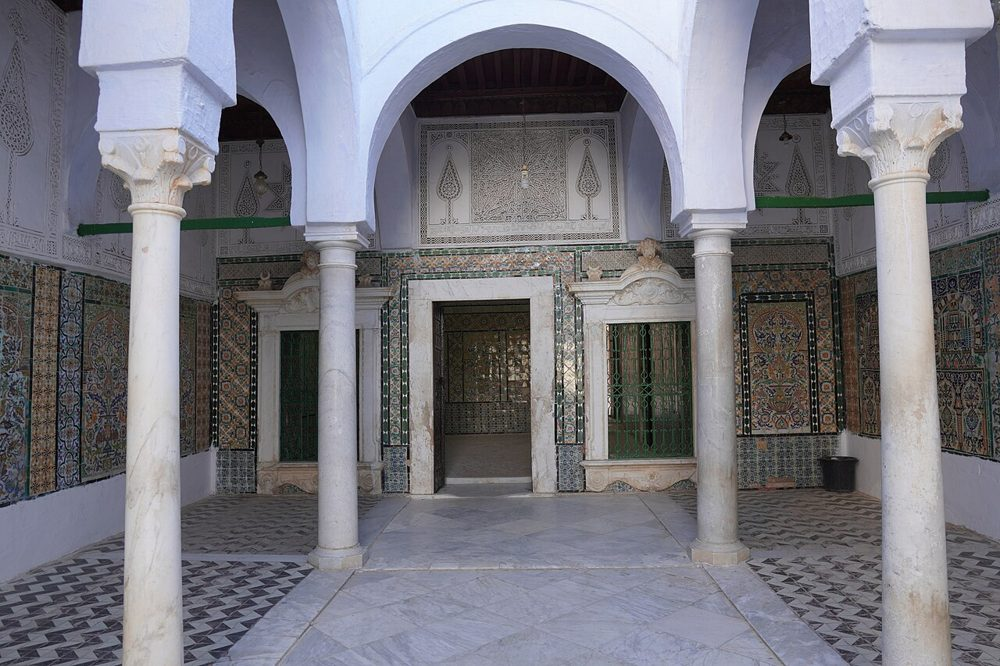
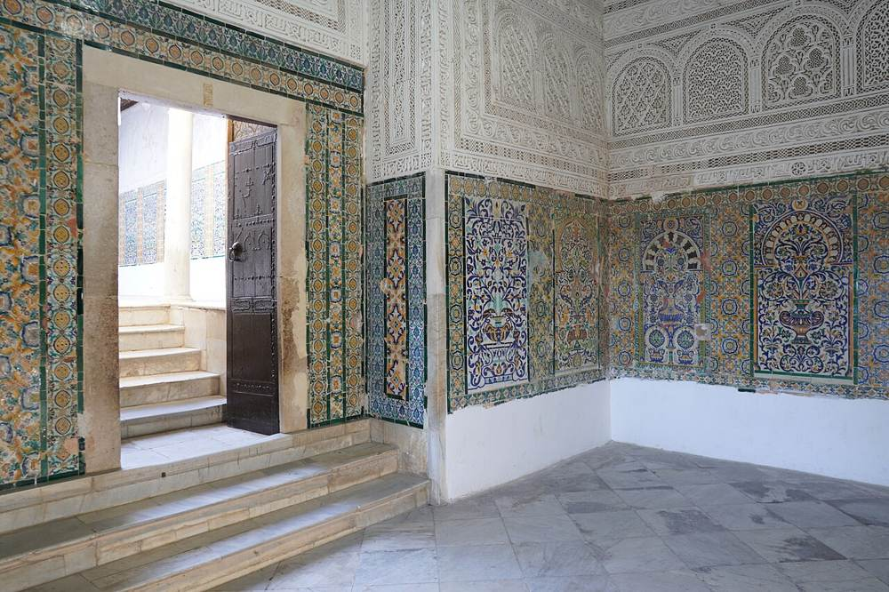

Tanıtım
Kayrevanlıların "Sidi Sahbi" dediği, Peygamber'in ﷺ sahabîsi Ebu Zem'a el-Belevî'nin türbesi: Kayrevan'ın koruyucu velisi. Çini ve oyma alçıyla kaplı avluları onu şehrin en güzel anıtlarından biri yapar.
Fotoğraflar


Tarih
Ebu Zem'a el-Belevî 654'te (Hicrî 34) savaşta vefat etti. Üzerinde Peygamber'in ﷺ sakalından birkaç tel taşıdığı anlatılır; "Berber Camii" adı buradan gelir. Eski yapı 17. yüzyılda Muradî beyleri tarafından tamamen yenilendi: Hammude Paşa 1662 civarında zaviyeyi, medreseyi ve minareyi yeniden yaptı, ardından Muhammed Bey 1681-1685 civarında türbenin kubbesini yeniledi.
Mimari
Medine surlarının dışında geniş bir külliye: giriş avlusu ve Endülüs üslubunda minare, sütunlu bir iç avlu, kubbeli bir salon, ardından türbe odasından önce gelen, duvarları çok renkli çinilerle ve ince oyma alçıyla kaplı bir avlu. Öğrenci odaları ve namaz salonuyla bir medrese külliyeyi tamamlar.
Rolü ve etkisi
Tunusluların en çok ziyaret ettiği yerlerden biridir, özellikle Mevlid'de; burada nikâhlar kıyılır, sünnet törenleri de yapılır. Eskiden Mağrib kervanları Mekke'ye hacca gitmeden önce burada toplanırdı.
Önemli tarihler
- 654Ebu Zem'a el-Belevî'nin vefatı (Hicrî 34)
- 1662Hammude Paşa'nın zaviyesi, medresesi ve minaresi (bu tarih civarı)
- 1681Muhammed Bey'in yeni türbe kubbesi (1681-1685)
- 1988Kayrevan UNESCO Dünya Mirası listesine alınır
Ziyaret
Burası önce bir ibadet yeridir: uygun giyinin, harime girerken ayakkabılarınızı çıkarın ve namaz vakitlerinden kaçının. Birçok büyük camide Müslüman olmayan ziyaretçiler avluya girebilir ama harime giremez. Saatler değişir: yerinde bilgi alın.
Haritada
Belgeler ve bağlantılar
Kaynaklar
- Metinler, yukarıdaki belgelere (Vikipedi, Qantara, Discover Islamic Art, UNESCO) dayanarak Tunus Camileri tarafından yazılmış ve 09/10/2026'da kontrol edilmiştir.
- Wikidata : Q12244566 (CC0)
- Fotoğraflar: Wikimedia Commons, her fotoğrafın altında sahibi ve lisansı.
- Konum: OpenStreetMap (ODbL) ve Wikidata.